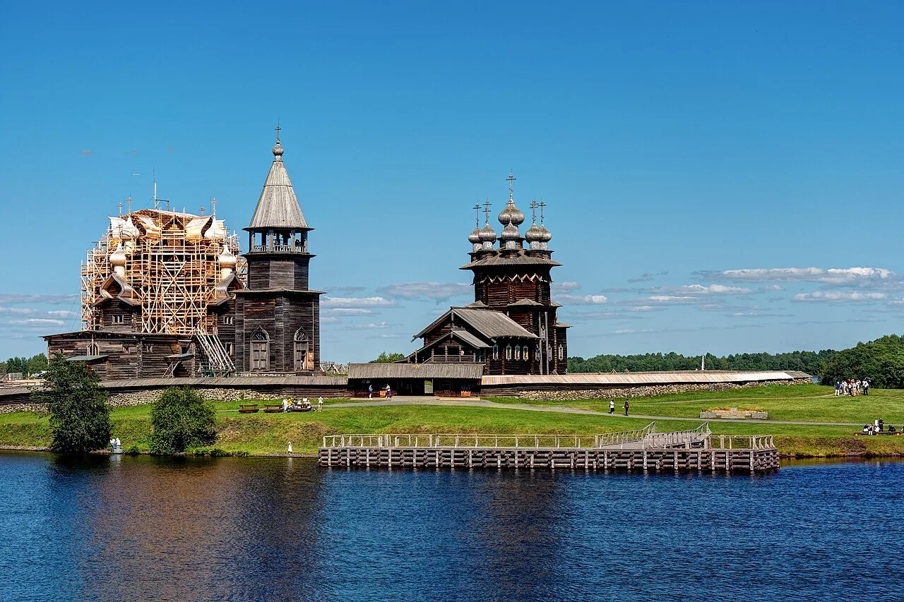
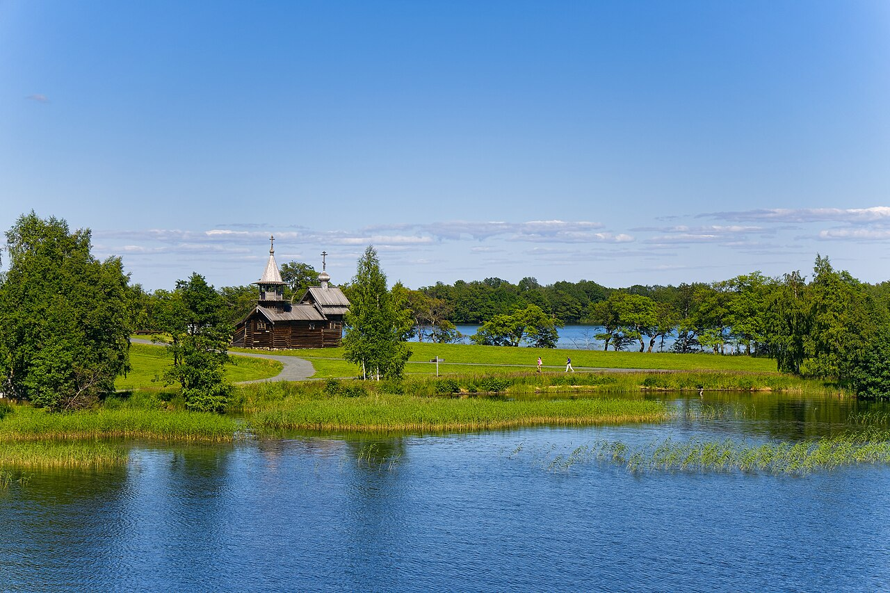
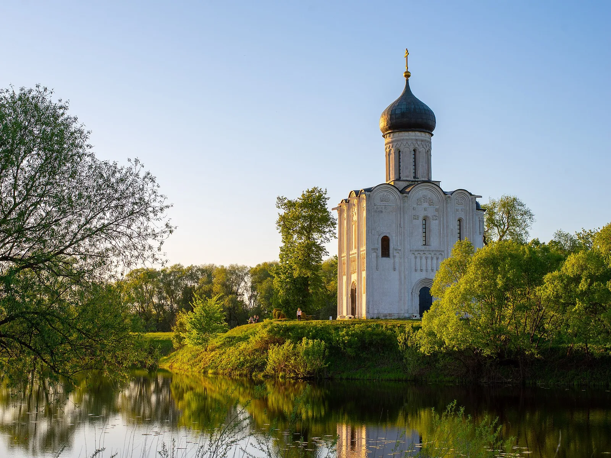
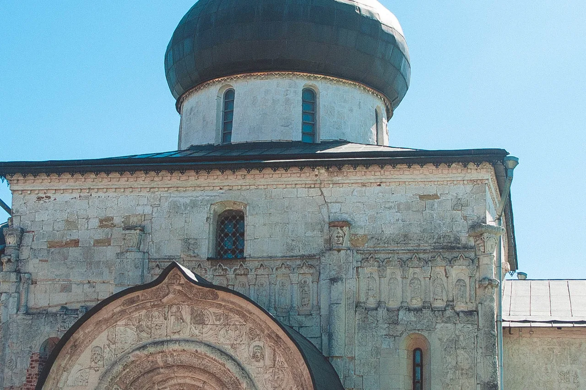
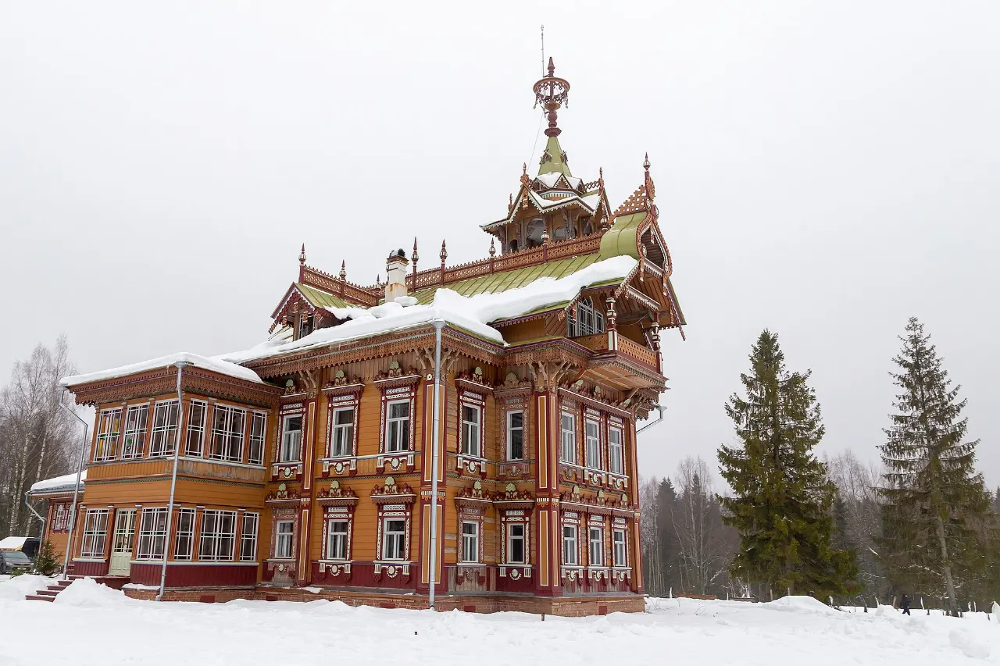
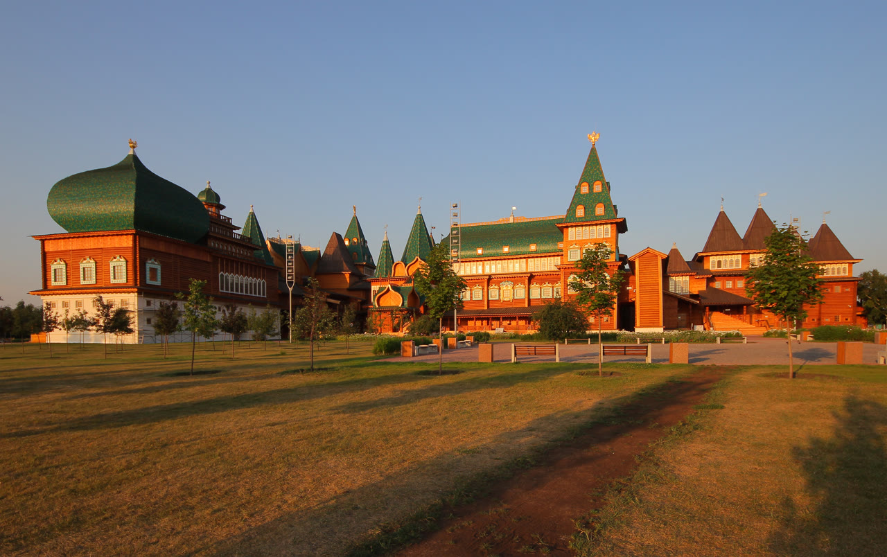

ВХОД

Главная история · Кижи
Что держит Кижи?
Издалека — силуэт. Вблизи — целая система.
Подойти ближе · 3 минутыАрхитектура начинается там,
где красивый вид становится вопросом

Главная история · Кижи
Издалека — силуэт. Вблизи — целая система.
Подойти ближе · 3 минутыАрхитектура начинается там,
где красивый вид становится вопросом
Сюжет появится из утверждённого календаря музея.
Переключай взгляд. Фотография меняется вместе с вопросом — от ландшафта к следу времени.

Вода определяет путь и первое появление силуэта.
Не каталог фасадов. Семь входов в место, конструкцию, утрату и человеческий труд.

Покров на Нерли

Невьянск

Юрьев-Польский

Асташово

Коломенское

Поважье
Экскурсии для класса
Учитель выбирает длительность, выводит страницу на общий экран и ведёт класс через наблюдение, выбор и короткий вывод.
Класс предполагает, что важнее всего в Кижах.
Четыре группы берут остров, ансамбль, дом и деталь.
Каждая группа называет одно архитектурное решение.
Результат: ученик различает ландшафт, ансамбль, здание и деталь и объясняет одну связь между ними.
Фасад показывает форму. Архитектура объясняет выбор.
365 архитектурных вопросов
Открой дату — увидишь не голое название, а вопрос дня. Опубликованные выпуски ведут в полную историю; остальные честно показывают утверждённый замысел без ложной ссылки.
Состав 365/365 утверждён Сергеем 2 сентября 2026 года
Начни с трёх минут. Дальше музей сам предложит приблизиться, измерить или усомниться.